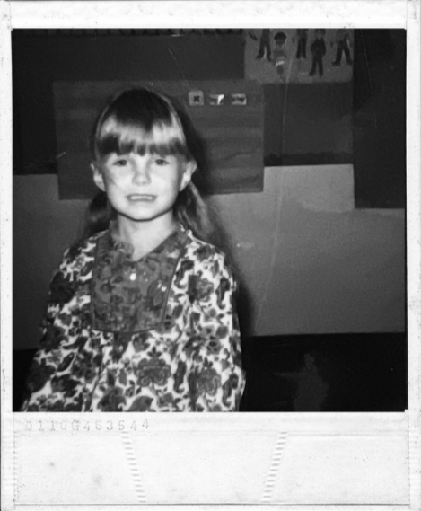

I ENTER INTO EVIDENCE
seven years old and singing along it was tuesday and her favorite karaoke was on but circling the butterflies she sang about she couldn’t help but notice someone hanging around he took her to a new world fueled by nightmare told her “grow up fast or you won’t survive” after all of it who could blame her turning out like this yeah she’s angry but you would be angry too if you had gone through the things she’s gone through her prayers were holy and her thorns were rosy but those aren’t roses and she got lonely Who can blame her for the darkness in her soul oh Fifteen, high school, moving along Moving towards popularity She saw him couldn’t get enough of that face Now her dreams are haunted by his cold embrace He took her to a new world fueled by nightmare Told her “grow up fast or you won’t survive” After all of it Who could blame her turning out like this Yeah she’s angry but you would be angry too If you had gone through the things she’s gone through Her prayers were holy and her thorns were rosy But those aren’t roses and she got lonely Who can blame her for the darkness in her soul Seeing red in the backseat cause she Knows that she’d better be treated better Yeah, better be treated better And in the morning light you know that she She’ll be doing better Yeah, she’ll be doing better but Now she’s angry and you would be angry too If you had gone through the things she’s gone through Her prayers were holy and her thorns were rosy But those aren’t roses and she got lonely Who can blame her for the darkness in her soul oh
Lyrics by Elliot Wren. Music by Elliot Wren and Brad Young.